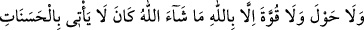
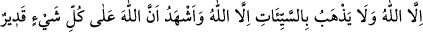

sağlayacağına veya onlardan bir zararı gidereceğine inanıyorlardı. Sanki onu, bu
hususta Allah’a ortak koşuyorlardı.
Abdullah b. Abbas (r. anhümâ) demiştir ki: Bir kimse evinden çıkar, sonra bir şeyi
uğursuz saydığı için evine geri dönerse müşrik veya âsî olarak dönmüş olur.
Muhît isimli eserde zikredildiğine göre güvercin öttüğü zaman bir adam “Falan hasta
ölüyor” dese bazı âlimlere göre bu kimse küfre girer. Bir adam sefere çıksa, yolda
giderken saksağan ötse ve bu yüzden geri dönse meşayihden bazısına göre kâfir olur.
İkrime (r.a.) demiştir ki: Biz, İbn Ömer (r.a.)’ın yanında idik. İbn Abbas (r. anhümâ)
da orada idi. Bir karga öterek yanımızdan geçti. Orada bulunanlardan biri “Hayırdır,
hayırdır.” dedi. Bunun üzerine İbn Abbas: “Ne hayır, ne de şerdir.” diye karşılık verdi.
En ziyade karga uğursuz sayılmıştır. Araplar kargaya “ğurabu’l-beyn” (ayrılan karga)
derlerdi. Çünkü o, Nûh (a.s.) kendisini suya bakmak için gönderdiği zaman gitmiş bir
daha geri dönmemiştir. Böylece Nûh (a.s.)’dan ayrılmıştır. İşte bu sebeple onu uğursuz
saymışlar ve “gurbet” tabirini de onun isminden türetmişlerdir.
İbn Mes‘ûd (r.a.) şöyle demiştir: “Uğursuz sayma, sadece uğursuz sayana zarar
verir.” Bu sözün mânâsı şudur: Bir kimse, yasak olduğu halde bir şeyi uğursuz sayar
veya onu uğursuz sayılacak bir şey görür de bu sebeple yapacağı işi yapmaktan
vazgeçerse kaçtığı başına gelir. Kim de korku ve ümit bakımından gönlünü Allah’a
bağlar, gönlünü korkulan sebeplere bağlanmaktan uzaklaştırır ve söylenmesi tavsiye
edilen sözleri okuyup geçerse ona bir zarar gelmez.
Bu sözlerden maksad, Rasûl-i Ekrem (s.a.v.)’in şu hadîsinde belirtilen manadır: “Her
kulun kalbine bazen bir şeyi uğursuz sayma hissi girer. Kişi bunu hissettiği zaman
şöyle desin:
Allah’ım, senin uğursuz kılman dışında bir uğursuzluk yoktur. Senin hayırlı
kılmandan başka hiçbir hayır yoktur. Senden başka hiçbir ilâh yoktur. Güç ve kuvvet,
sadece Allah’a aittir. Ancak Allah’ın dilediği olur. İyilikleri veren de Allah,
kötülükleri gideren de Allah’tır. Allah’ın her şeye kadir olduğuna şahitlik ederim.”[69]
Böyle der, sonra işini yapmak üzere gider. Yani insanın başına gelen hayır, şer, uğur ve
uğursuzluk ancak senin takdirin, hükmün ve dilemen iledir.” demektir.
Bir hadiste de şöyle buyurulmuştur: “Uğursuzluk, kadında, atta ve evdedir.”[70]
Kadının uğursuzluğu ahlakının kötülüğü veya mihrinin fazlalığındadır. Çocuk
doğurmamasında olduğu da söylenmiştir. Atın uğursuzluğu, uysal olmayışında veya